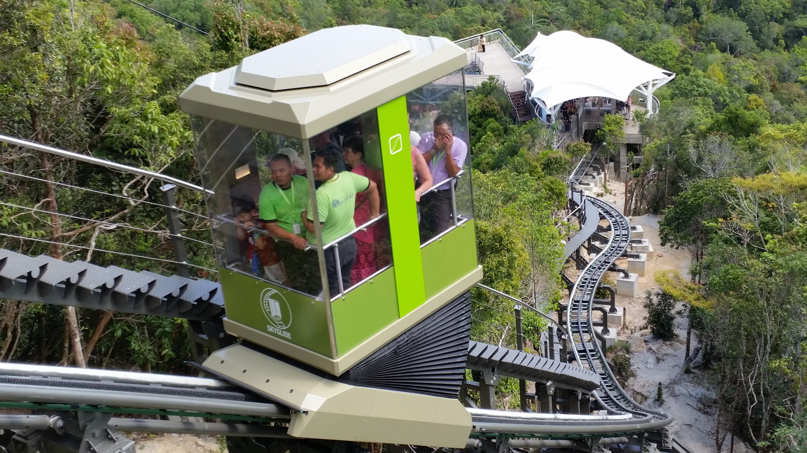
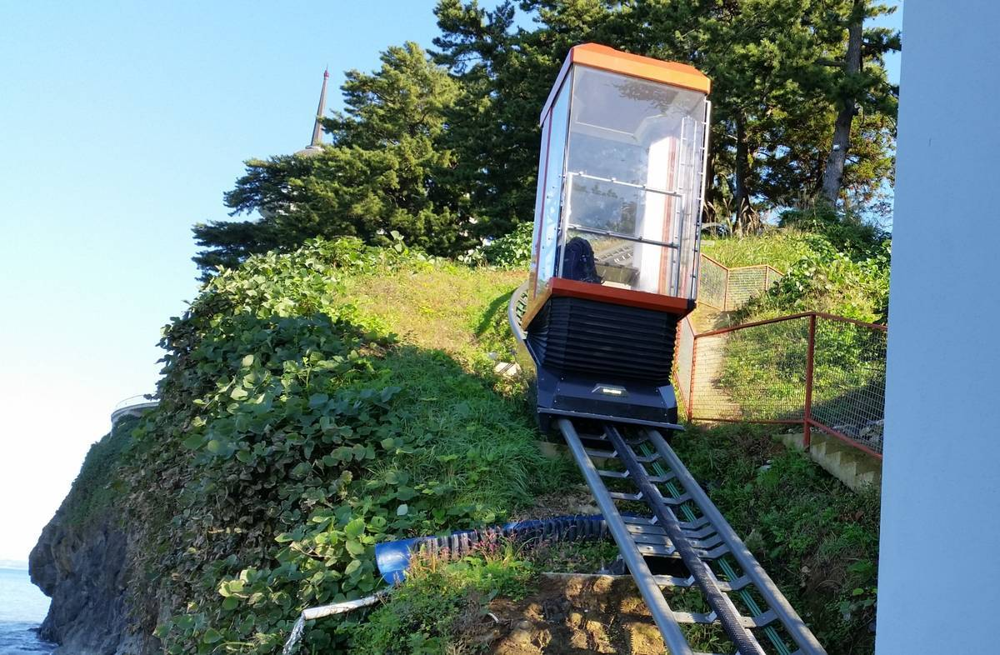
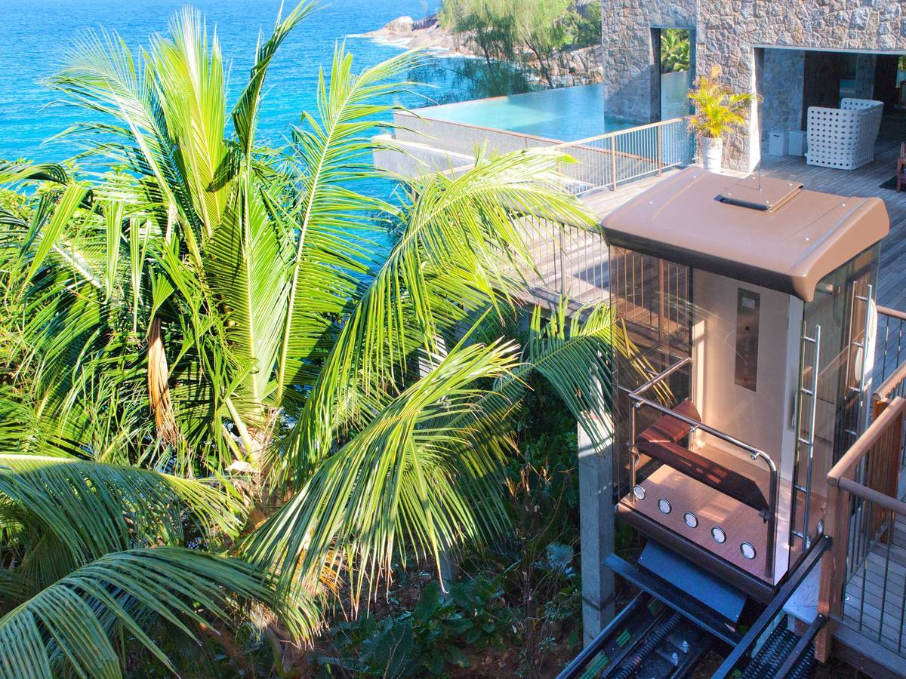
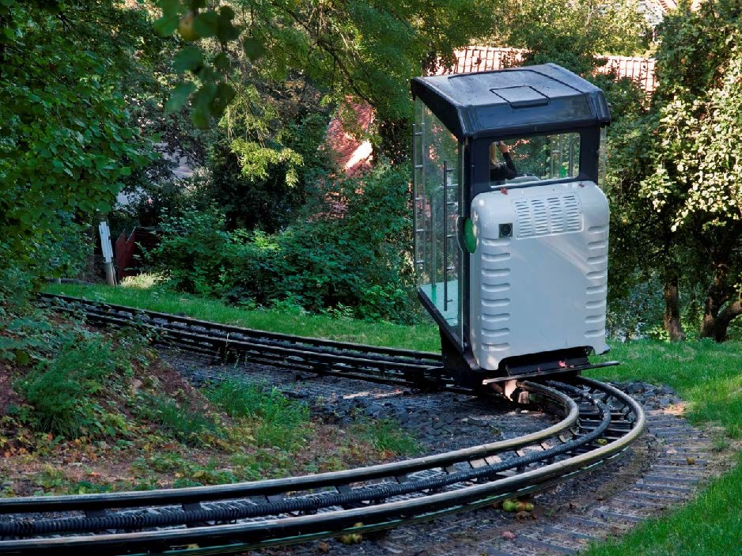
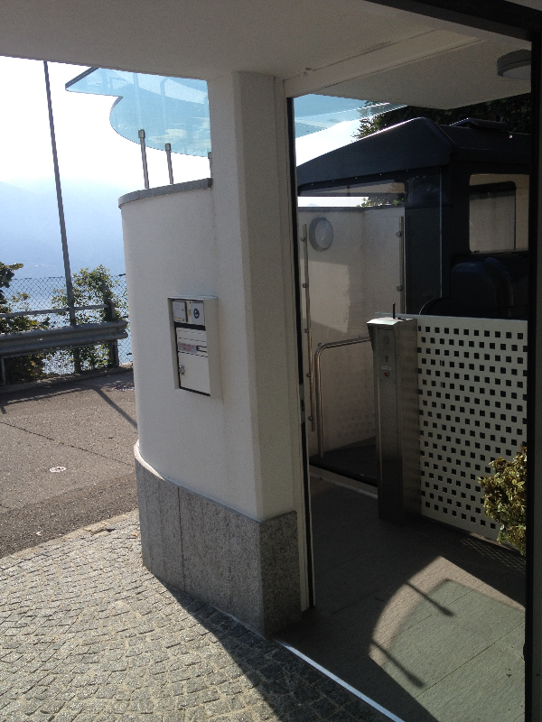
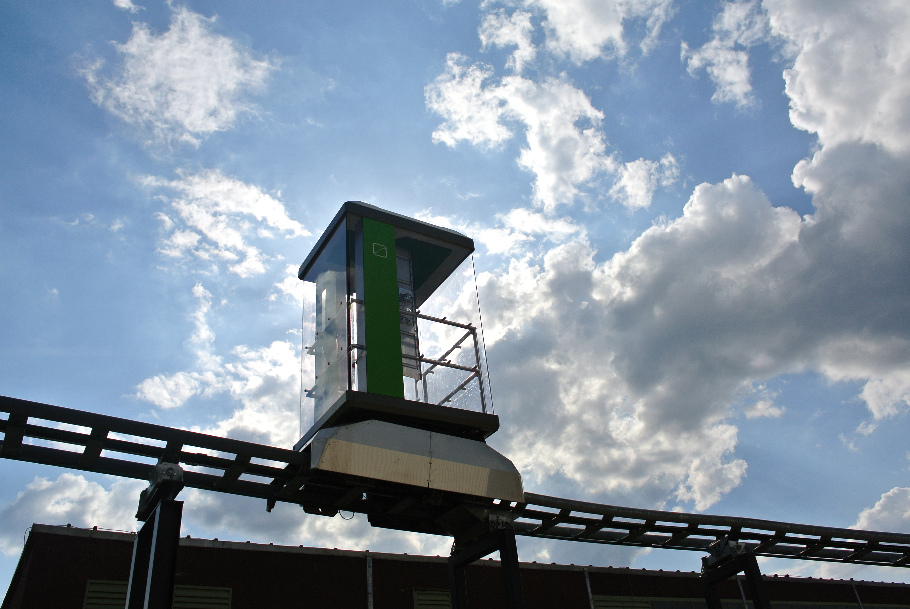
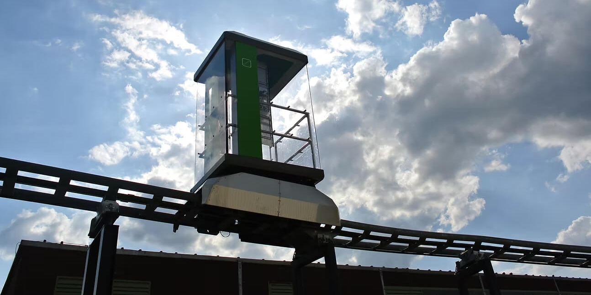
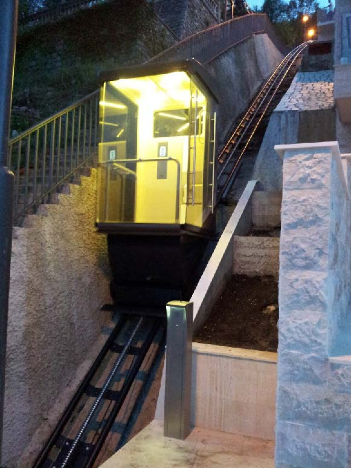

Where roads
end, lifts
begin.
Explore the technology
For terrain where
conventional infrastructure
is not feasible.
A self-propelled cabin system that installs on hillsides in 8 weeks: no excavation, no cable, no machine room. Designed for hotels, resorts, tourist attractions, and urban transit across slopes where funiculars and conventional elevators cannot go.
Installed worldwide






Built around three principles
Ecology
No excavation, no concrete foundations, no environmental permits to fight. The landscape stays intact. Your project installs in weeks without removing a single tree or disturbing the site.
Functionality
Curves around terrain features, handles changing inclines, scales from a private residence to a public transit route. Each system is engineered for your specific site, not adapted to it.
Reliability
Redundant braking and continuous remote diagnostics mean no unplanned downtime. Every installation is certifiable to national passenger transport standards, with no regulatory risk at project handoff.
The lift that goes
around the mountain.
Unlike conventional inclined elevators, the Outdoor Lift navigates around trees, rocky outcrops, and hillside features, without excavation. The self-propelled cabin carries all drive components onboard. No engine room. No separate machine house. No fixed straight line.
- Simultaneous change of direction and incline on a single track
- Self-leveling cabin, always horizontal regardless of incline angle
- Any number of intermediate stops along the route
- Wheelchair accessible entrances as standard
- Real-time remote diagnostics over the internet
- Automatic doors and A/C unit optional

Built for five applications
A single system, scaled to the project. From private hillside homes to high-volume public transit.

Safety is not
a feature. It is
the foundation.
Every Outdoor Lift system is engineered with independent fail-safe mechanisms: redundant braking systems that engage automatically, continuous real-time monitoring, on-board diagnostics. Certified to the same standards as conventional passenger lifts.
Common questions
Can it navigate around trees and natural obstacles?
Yes. This is the system's core differentiator. The curving guide rails can change direction and incline simultaneously, allowing the track to bypass rocks, trees, and terrain features without any excavation or environmental intervention.
Does it operate in winter: snow, ice, cold climates?
Yes. The Outdoor Lift is designed for all-weather operation. The track system remains functional in snow and ice conditions, and cabin heating keeps passengers comfortable. Installations operate across climatic zones from tropical to Alpine.
How long does installation take?
Typically 4 to 8 weeks, depending on track length and terrain complexity. Because the system requires no excavation or concrete foundations, site preparation is minimal and the surrounding landscape remains undisturbed.
What maintenance does the system require?
An annual professional inspection is standard. Remote diagnostics over the internet allow proactive monitoring between visits, and onboard sensoric systems detect anomalies automatically, including overload, storm conditions, and fire.
What standards does the system meet?
Each installation is engineered to meet the applicable international passenger transport standards for the project country. CDC's engineering process covers structural, mechanical, and electrical safety requirements from design through commissioning.
Explore the full
technology
Every installation is engineered to your specific terrain, capacity, and context.
Full specifications, project references, and the CDC engineering team, at cdc.company.